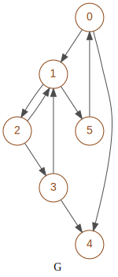

matrixbinary¶
Created on Apr 26, 2021
@author: salem Aguemoun
-
class
graphm.matrixbinary.MatrixBinary(**d)¶ Bases:
graphm.amatrix.AMatrixManage a boolean matrix with binary lines
Increase performance of boolean matrices with usage of integers (binary) for representation of list of booleans for lines and columns
Note
For inherited class variables see
graphm.amatrix.AMatrixCaution
Instance variables
- Variables
matrixM (list) – contents binary integers for rows
matrixN (list) – contents binary integers for columns
dimM (int) – rows number of matrix
dimN (int) – columns number of matrix
-
__init__(**d) → graphm.matrixbinary.MatrixBinary¶ Set the matrix properties with type given by one in:
matrix get a binary matrixM and dimN
reference get a MatrixBinary matrix by reference
matrices get the 2 matrices matrixM & matrixN
boolean get a boolean matrix
empty get 2 dimensions of an empty matrix
random get 2 dimensions of randomized matrix
unit get the dimension of unit matrix
- Parameters
**d (dict) –
options to specify the type of matrix
with following indexes:
- matrix
(tuple) matrixM in [int, …] and dimN: int
- matrces
(tuple) matrixM in [int, …] and dimN: int
- boolean
(list) matrix in [str, …] or [[int,…], …] or (str, …) or ((int,…), …)
- empty
(tuple) dimensions for matrix (dimM: int, dimN: int)
- random
(tuple) dimensions for matrix (dimM: int, dimN: int)
- unit
(int) dimensions for square matrix
For default options see
AMatrix.__init__
-
__deepcopy__() → graphm.matrixbinary.MatrixBinary¶
-
__add__(matrix: object) → graphm.matrixbinary.MatrixBinary¶ Return the result of a logical ‘|’ between values of instance and that passed in argument
- Parameters
matrix (MatrixBinary) – matrix to be added to the instance
- Returns
the result of the sum of this instance and that given in argument
- Return type
>>> m = MatrixBinary(boolean=['00001', '00100', '00010']) >>> m2 = MatrixBinary(boolean=['00001', '00000', '10011']) >>> m + m2 00001,00100,10011
-
__eq__(matrix: graphm.matrixbinary.MatrixBinary) → bool¶ Return equality between itself and argument
- Parameters
matrix (MatrixBinary) – matrix to be added to the instance
- Returns
True if this instance equals to that given
- Return type
bool
>>> m = MatrixBinary(boolean=['00001', '00100', '00010']) >>> m2 = MatrixBinary(boolean=['00001', '00100', '00010']) >>> m == m2 True
-
__mul__(matrix: graphm.matrixbinary.MatrixBinary) → graphm.matrixbinary.MatrixBinary¶ Return the matrix multiplication with a logical ‘&’ between instance and that passed in argument
- Parameters
matrix (MatrixBinary) – matrix to be added to the instance
- Returns
the result of the multiplication of this instance and that given in argument
- Return type
>>> m = MatrixBinary(boolean=['00001', '00100']) >>> m2 = MatrixBinary(boolean=['001', '000', '111', '101', '100']) >>> m * m2 100,111
-
__repr__() → str¶ Return a linear representation of the matrix in boolean view
Each rows of matrix are separated by a comma
- Returns
a linear representation of the matrix separated by comma
>>> m = MatrixBinary(boolean=['00001', '00100', '00010']) >>> m.__repr__() '00001,00100,00010'
-
__str__() → str¶ Return dimensions of matrix and matrix in 2 dimensions in boolean view
Each rows of matrix are on a separated line
- Returns
a 2 dimensions representation of the matrix
- Return type
str
>>> m = MatrixBinary(boolean=['00001', '00100', '00010']) >>> print(m) dim 3,5 00001 00100 00010
-
closure_reflexive(full=False) → dict¶ Return the transitive closure of itself in a new matrix using an internal optimized product
If argument ‘full’ is False, the transitive closure stop when closure(d) = closure(d-1)
- Parameters
full (bool) –
if True calculates all ranks, otherwise only until a stabilized closure
default = False
- Returns
The transitive closure and the deep of stabilized closure
- Return type
tuple(MatrixBinary: closure, int: deep)
>>> m = MatrixBinary(boolean=['00001', '00100', '00010', '01010', '00010']) >>> result = m.closure_reflexive() >>> result['closure'] 11111,01110,01110,01110,01111
-
closure_reflexive_optimized(optimize='soft') → dict¶ Return the transitive closure of itself in a new matrix using class
Factorto optimize productsIf argument ‘full’ is False, the transitive closure stop when closure(d) = closure(d-1)
- Returns
The transitive closure with a deep of stabilized closure
- Return type
>>> m = MatrixBinary(boolean=['00001', '00100', '00010', '01010', '00010']) >>> result = m.closure_reflexive_optimized() >>> result['closure'] 11111,01110,01110,01110,01111
-
closure_matrix(add=False, full=False) → dict¶ Return the transitive closure of itself and intermediate adjacency matrices using an internal optimized product
If argument ‘full’ is False, the transitive closure stop when closure(d) = closure(d-1)
- Parameters
add (bool) –
if True adds unit matrix otherwise no
default = False
full (bool) –
if True calculates all ranks, otherwise only until a stabilized closure
default = False
- Returns
The transitive closure with intermediate adjacency matrices and the deep of stabilized closure
- Return type
tuple(MatrixBinary: closure, int: deep, list(MatrixBinary): intermediate matrices)
>>> m = MatrixBinary(boolean=['00001', '00100', '00010', '01010', '00010']) >>> result = m.closure_matrix() >>> result['closure'] 01111,01110,01110,01110,01110
>>> m = MatrixBinary(boolean=['10001', '01100', '00110', '01010', '00011']) >>> result = m.closure_matrix() >>> result['closure'] 11111,01110,01110,01110,01111
-
closure_slides(add=False, full=False) → dict¶ Return the transitive closure of itself and intermediate adjacency matrices matrixM using an internal optimized product
If argument ‘full’ is False, the transitive closure stop when closure(d) = closure(d-1)
- Parameters
add (bool) –
if True adds unit matrix otherwise no
default = False
full (bool) –
if True calculates all ranks, otherwise only until a stabilized closure
default = False
- Returns
The transitive closure with intermediate adjacency matrices matrixM
- Return type
tuple(MatrixBinary: closure, int: deep, list(matrixM): matrice slides)
>>> m = MatrixBinary(boolean=['00001', '00100', '00010', '01010', '00010']) >>> result = m.closure_slides() >>> result['closure'] 01111,01110,01110,01110,01110
-
copy() → graphm.matrixbinary.MatrixBinary¶ Return a copy of matrix
- Returns
copy of matrix
- Return type
>>> m = MatrixBinary(boolean=['001', '000', '111', '101', '100']) >>> m.copy() 001,000,111,101,100
-
static
get_edges_count(matrix: graphm.matrixbinary.MatrixBinary) → int¶ Give the number of edges in matrix
- Returns
the number of edges in matrix
- Return type
int
>>> m = MatrixBinary(boolean=['000', '000', '000']) >>> MatrixBinary.get_edges_count(m) 0
>>> m = MatrixBinary(boolean=['010010', '001000', '010101', '010010', '000000', '000000']) >>> MatrixBinary.get_edges_count(m) 8
-
static
get_int2str(line: int, dim: int) → str¶ Return the converted boolean string from binary integer, string length is adjusted by to dim.
dim is the dimension of line
Warning
Use dimN for matrixM & dimM for matrixN
- Parameters
line (int) – line of boolean in integer representation
dim (int) – number of nodes
- Returns
boolean strings
- Return type
str
>>> MatrixBinary.get_int2str(36, 10) '0000100100'
-
static
get_matrix_formated(matrix: graphm.matrixbinary.MatrixBinary, style='int') → any¶ Return the formated matrix passed in argument
- Parameters
style (str) – style of export of closure * int return 0/1 integers * str Return string of ‘0’/’1’ * bin return binary integers
- Returns
the formated matrix of transitive closure
- Return type
list
>>> m = MatrixBinary(boolean=['010010', '001000', '010100', '010010', '000000', '000000'])
>>> print(MatrixBinary.get_matrix_formated(m)) [[0, 1, 0, 0, 1, 0], [0, 0, 1, 0, 0, 0], [0, 1, 0, 1, 0, 0], [0, 1, 0, 0, 1, 0], [0, 0, 0, 0, 0, 0], [0, 0, 0, 0, 0, 0]]
>>> print(MatrixBinary.get_matrix_formated(m, style='str')) ['010010', '001000', '010100', '010010', '000000', '000000']
>>> print(MatrixBinary.get_matrix_formated(m, style='bin')) [18, 8, 20, 18, 0, 0]
-
static
get_matrix_desunited(matrix: graphm.matrixbinary.MatrixBinary) → graphm.matrixbinary.MatrixBinary¶ Returns the MatrixBinary matrix to which the unit matrix has been added :param MatrixBinary matrix:
- Returns
returns the matrix plus the unit matrix
- Return type
>>> m = MatrixBinary.get_matrix_desunited(MatrixBinary(boolean=['010010', '001000', '010100', '010010', '000000', '000000'])) >>> print(m) dim 6,6 010010 001000 010100 010010 000000 000000
>>> m = MatrixBinary.get_matrix_desunited(MatrixBinary(boolean=['110010', '011000', '011100', '010110', '000010', '000001'])) >>> print(m) dim 6,6 010010 001000 010100 010010 000000 000000
-
static
get_matrix_united(matrix: graphm.matrixbinary.MatrixBinary) → graphm.matrixbinary.MatrixBinary¶ Returns the MatrixBinary matrix to which the unit matrix has been added :param MatrixBinary matrix:
- Returns
returns the matrix plus the unit matrix
- Return type
>>> m = MatrixBinary.get_matrix_united(MatrixBinary(boolean=['010010', '001000', '010100', '010010', '000000', '000000'])) >>> print(m) dim 6,6 110010 011000 011100 010110 000010 000001
>>> m = MatrixBinary.get_matrix_united(MatrixBinary(boolean=['110010', '011000', '011100', '010110', '000010', '000001'])) >>> print(m) dim 6,6 110010 011000 011100 010110 000010 000001
-
static
get_matrixX_desunited(matrixX: list, dimX: int) → list¶ Returns the single matrix (M or N) to which the unit matrix has been added
Warning
for matrixM use dimN and for matrixN use dimM
- Parameters
matrixX (list) – matrixM or matrixN
- Returns
returns the matrix matrixX (M or N) plus the unit matrix
- Return type
list
>>> m = MatrixBinary(boolean=['010010', '001000', '010100', '010010', '000000', '000000']) >>> m.matrixM = MatrixBinary.get_matrixX_desunited(m.matrixM, m.dimN) >>> print(m) dim 6,6 010010 001000 010100 010010 000000 000000
>>> m = MatrixBinary(boolean=['110010', '011000', '011100', '010110', '000010', '000001']) >>> m.matrixM = MatrixBinary.get_matrixX_desunited(m.matrixM, m.dimN) >>> print(m) dim 6,6 010010 001000 010100 010010 000000 000000
-
static
get_matrixX_united(matrixX: list, dimX: int) → list¶ Returns the single matrix (M or N) to which the unit matrix has been added
Warning
for matrixM use dimN and for matrixN use dimM
- Parameters
matrixX (list) – matrixM or matrixN
- Returns
returns the matrix matrixX (M or N) plus the unit matrix
- Return type
list
>>> m = MatrixBinary(boolean=['010010', '001000', '010100', '010010', '000000', '000000']) >>> m.matrixM = MatrixBinary.get_matrixX_united(m.matrixM, m.dimN) >>> print(m) dim 6,6 110010 011000 011100 010110 000010 000001
>>> m = MatrixBinary(boolean=['110010', '011000', '011100', '010110', '000010', '000001']) >>> m.matrixM = MatrixBinary.get_matrixX_united(m.matrixM, m.dimN) >>> print(m) dim 6,6 110010 011000 011100 010110 000010 000001
-
static
get_M2N(matrixM: graphm.matrixbinary.MatrixBinary, dimN: int) → list¶ Return the transpose of the matrixM (list of rows) given
Convert rows of matrix to columns
- Parameters
matrix ('MatrixBinary') – matrix content
dimN (int) – dimension of matrixN, number of columns
- Returns
the transpose of the matrix
- Return type
list
>>> MatrixBinary.get_M2N([1, 4, 2], 5) [0, 0, 2, 1, 4]
-
static
get_str2int(line: str) → int¶ Return the converted binary integer from boolean str,
- Parameters
line (str) – a string of boolean representing the row m of the matrix
- Returns
integer representing the row m of the matrix
- Return type
int
>>> MatrixBinary.get_str2int('0000100100') 36
-
static
is_reflexive(matrix: graphm.matrixbinary.MatrixBinary) → bool¶ return True if matrix is unit
- Parameters
matrix (MatrixBinary) – matrix of graph
- Returns
True if matrix is unit
- Return type
bool
>>> m = MatrixBinary(boolean=[[1, 0, 0, 0, 1], [0,1, 1, 0, 0], [0, 0, 1, 1, 0]]) >>> MatrixBinary.is_reflexive(m) False
>>> m = MatrixBinary(boolean=[[0, 0, 0, 0, 1], [0, 0, 1, 0, 0], [0, 0, 0, 1, 0], [0, 0, 0, 1, 1], [0, 0, 0, 1, 0]]) >>> MatrixBinary.is_reflexive(m) False
>>> m = MatrixBinary(boolean=[[1, 0, 0, 0, 1], [0, 1, 1, 0, 0], [0, 0, 1, 1, 0], [0, 0, 0, 1, 0], [0, 0, 0, 1, 1]]) >>> MatrixBinary.is_reflexive(m) True
-
static
is_symmetric(matrix: graphm.matrixbinary.MatrixBinary) → bool¶ Return true if the matrix is symmetric
- Parameters
matrix (MatrixBinary) – matrix of graph
- Returns
True if the matrix is symmetric
- Return type
bool
>>> m = MatrixBinary(boolean=['010010', '001000', '010100', '010010', '000000', '000000']) >>> MatrixBinary.is_symmetric(m) False
>>> m = MatrixBinary(boolean=['011010', '101000', '110100', '101010', '100100', '101000']) >>> MatrixBinary.is_symmetric(m) False
>>> m = MatrixBinary(boolean=['011010', '101000', '110100', '001010', '100100', '000000']) >>> MatrixBinary.is_symmetric(m) True
-
static
is_symmetric_pre(matrix: graphm.matrixbinary.MatrixBinary) → bool¶ returns True if the matrix has minimal symmetry with predecessor at least one back edge for each edge
Important
return True if each edge has at least one edge back
- Parameters
matrix (MatrixBinary) – matrix of graph
- Returns
True if the matrix has minimal symmetry with predecessor
- Return type
bool
>>> m = MatrixBinary(boolean=['010010', '001000', '010100', '010010', '000000', '000000']) >>> MatrixBinary.is_symmetric_pre(m) False
>>> m = MatrixBinary(boolean=['011010', '101000', '110100', '101010', '100100', '101000']) >>> MatrixBinary.is_symmetric_pre(m) True
>>> m = MatrixBinary(boolean=['011010', '101000', '110100', '001010', '100100', '000000']) >>> MatrixBinary.is_symmetric_pre(m) True
-
static
is_symmetric_suc(matrix: graphm.matrixbinary.MatrixBinary) → bool¶ returns True if the matrix has minimal symmetry with successor at least one edge for each back edge
Important
return True if each back edge has at least one edge
- Parameters
matrix (MatrixBinary) – matrix of graph
- Returns
True True if the matrix has minimal symmetry with successor
- Return type
bool
>>> m = MatrixBinary(boolean=['010010', '001000', '010100', '010010', '000000', '000000']) >>> MatrixBinary.is_symmetric_suc(m) False
>>> m = MatrixBinary(boolean=['011011', '101011', '110100', '001010', '100100', '000000']) >>> MatrixBinary.is_symmetric_suc(m) True
>>> m = MatrixBinary(boolean=['011010', '101000', '110100', '001010', '100100', '000000']) >>> MatrixBinary.is_symmetric_suc(m) True
-
matrixM2N() → None¶ set the transpose of the matrixM (list of rows) of itself
Convert rows of this matrix to columns
>>> m = MatrixBinary(boolean=['001', '000', '111', '101', '100']) >>> m.matrixN = [] >>> m.matrixM2N() >>> m.matrixN [7, 4, 22]
-
paths_cycle(node_start: int, deep: int = 0) → dict¶ Return a dictionary of paths of cycles found starting from node
Important
You can limit the deep (rank) of searching by give deep in argument
- Parameters
node_start (int) – the starting node to search paths
deep (int) – limit of rank from starting node to find paths of cycles
- Returns
paths of cycles
- Return type
dict
- paths_cycle
(list) all paths of cycles
- nodes_reached
(set) all reached nodes including starting node
>>> m = MatrixBinary(boolean=['00001', '00100', '00010', '00000', '01001']) >>> m.paths_cycle(4) {'reflexive': False, 'paths_cycle': [], 'nodes_reached': {1, 2, 3, 4}, 'deep': 4}
>>> m = MatrixBinary(boolean=['010010', '001000', '010100', '010010', '000000', '000000'])
>>> m.paths_cycle(0) {'reflexive': False, 'paths_cycle': [[1, 2], [1, 2, 3]], 'nodes_reached': {0, 1, 2, 3, 4}, 'deep': 5}
>>> m.paths_cycle(4) {'reflexive': False, 'paths_cycle': [], 'nodes_reached': {4}, 'deep': 0}
-
paths_from(node_start: int, deep: int = 0) → dict¶ Return a dictionary of all paths starting from node
Important
You can limit the deep (rank) of searching by give deep in argument
- Parameters
node_start (int) – the starting node to search paths
deep (int) – limit of rank from starting node to find paths of cycles
- Returns
paths
- Return type
dict
- paths_final
(list) all paths which access to maximal deep
- paths_ended
(list) all paths which deep less than maximal one
- paths_cycle
(list) all paths of elementary cycles
- nodes_reached
(set) all reached nodes including starting node
>>> m = MatrixBinary(boolean=['010010', '001000', '010100', '010010', '000000', '000000'])
>>> m.paths_from(0) {'reflexive': False, 'paths_deep': [], 'paths_ended': [[0, 4], [0, 1, 2, 3, 4]], 'paths_cycle': [[1, 2], [1, 2, 3]], 'nodes_reached': {0, 1, 2, 3, 4}, 'deep': 5}
>>> m.paths_from(0,2) {'reflexive': False, 'paths_deep': [[0, 1, 2]], 'paths_ended': [[0, 4]], 'paths_cycle': [], 'nodes_reached': {0, 1, 2, 4}, 'deep': 2}
>>> m.paths_from(5) {'reflexive': False, 'paths_deep': [], 'paths_ended': [], 'paths_cycle': [], 'nodes_reached': {5}, 'deep': 0}
-
paths_from_to(node_start: int, node_end: int, deep: int = 0) → dict¶ Return a dictionary of all paths starting from node ‘node_start’ to ‘node_end’
Important
You can limit the deep (rank) of searching by give deep in argument
- Parameters
node_start (int) – the starting node
node_end (int) – the ending node
deep (int) – limit of rank from starting node to find paths of cycles
- Returns
paths
- Return type
dict
- count
(int) iterations count
- nodes_reached
(set) all reached nodes including starting node
- paths_final
(list) all paths which access to maximal deep
- reached
(bool) True if node_end is reached by node_start
>>> m = MatrixBinary(boolean=['010010', '001000', '010100', '010010', '000000', '000000'])
>>> m.paths_from_to(0, 3) {'reflexive': False, 'nodes_reached': {0, 1, 2, 4}, 'paths_final': [[0, 1, 2, 3]], 'reached': True, 'deep': 3, 'count': 6}
>>> m.paths_from_to(0, 5) {'reflexive': False, 'nodes_reached': {0, 1, 2, 3, 4}, 'paths_final': [], 'reached': False, 'deep': 5, 'count': 8}
>>> m.paths_from_to(5 ,5) {'reflexive': False, 'nodes_reached': {5}, 'paths_final': [], 'reached': False, 'deep': 0, 'count': 1}
>>> m = MatrixBinary(boolean=['010010', '001000', '010100', '010010', '000000', '000001'])
>>> m.paths_from_to(5 ,5) {'reflexive': False, 'nodes_reached': {5}, 'paths_final': [], 'reached': True, 'deep': 0, 'count': 1}
-
report() → dict¶ Return a report of c properties
- Returns
a report of matrix properties
- Return type
dict
- matrix
(list) original matrix in format ‘str’
- closure
(list) transitive closure in format ‘str’
- symmetric
(bool) if true graph is symmetric
- symmetric_pre
(bool) if true matrix has minimal symmetry with predecessor (each edge has at least a back edge)
- symmetric_suc
(bool) if true matrix has minimal symmetry with successor (each back edge has at least an edge)
- reflexive
(bool) if true graph is reflexive
- Returns
a report of matrix properties
- Return type
dict

>>> m = MatrixBinary(boolean=['010010', '001000', '010100', '010010', '000000', '000000']) >>> print(m) dim 6,6 010010 001000 010100 010010 000000 000000
>>> print(m.report()) {'symmetric': False, 'symmetric_pre': False, 'symmetric_suc': False, 'reflexive': False, 'matrix': ['010010', '001000', '010100', '010010', '000000', '000000']}
>>> m = MatrixBinary(boolean=['010010', '001001', '010100', '010010', '000000', '100000']) >>> print(m) dim 6,6 010010 001001 010100 010010 000000 100000
>>> print(m.report()) {'symmetric': False, 'symmetric_pre': False, 'symmetric_suc': False, 'reflexive': False, 'matrix': ['010010', '001001', '010100', '010010', '000000', '100000']}
-
set_from_boolean(boolean: list) → None¶ Set content of the matrix from the boolean matrix given get a boolean matrix containing list of string or list of list of integers
- Parameters
matrix (list/tuple) – matrix in formats [str, …] or [[int,…], …] or (str, …) or ((int,…), …)
>>> m = MatrixBinary(boolean=['00001', '00100', '00010']) >>> m 00001,00100,00010
>>> m = MatrixBinary(boolean=[['0', '0', '0', '0', '1'], ['0', '0', '1', '0', '0'], ['0', '0', '0', '1', '0']]) >>> m 00001,00100,00010
>>> m = MatrixBinary(boolean=[[0, 0, 0, 0, 1], [0, 0, 1, 0, 0], [0, 0, 0, 1, 0]]) >>> m 00001,00100,00010
-
set_from_empty(empty: tuple) → None¶ Set an empty matrix containing only 0
- Parameters
empty (tuple) –
containing 2 dimensions of matrix: (rows, columns)
- dimM
(int) number of rows
- dimN
(int) number of columns
>>> m = MatrixBinary(empty=(4,8)) >>> m 00000000,00000000,00000000,00000000
-
set_from_matrix(matrix: tuple) → None¶ Set content of the matrix from the matrixM and dimN get a binary matrix contains a list of integers and with the number of columns
- Parameters
m (tuple) –
contains following indexes
- matrixM
(list) rows with integers
- dimN
(int) the number of columns
>>> m = MatrixBinary(matrix=([1, 4, 2], 5)) >>> m 00001,00100,00010
-
set_from_matrices(matrices: tuple) → None¶ Set content of the matrix from the matrices: matrixM & matrixN get a binary matrix contains a list of integers and with the number of columns
- Parameters
m (tuple) –
contains following indexes
- matrixM
(list) rows of matrix with integers
- matrixN
(list) columns of matrix with integers
>>> m = MatrixBinary(matrices=([1, 4, 2],[0, 0, 2, 1, 4])) >>> m 00001,00100,00010
-
set_from_nodes_edges(nodes_edges: tuple) → None¶ Set boolean matrix from nodes or edges
Note
if edges are given without nodes, the nodes are generate from edges automatically
- Parameters
nodes_edges (tuple) –
tuple(node, edges)
- edges
(iter) edges in format ‘in,out’ or [in, out] or (in, out)
- nodes
(iter) names of nodes in iterable of strings
>>> m = MatrixBinary(nodes_edges=(['A','B','C','D','E'], ('A-D','D-A','D-C','C-A','B-C','B-B'))) >>> print(m) dim 5,5 00010 01100 10000 10100 00000
>>> m = MatrixBinary(nodes_edges=((),('A-D','D-A','D-C','C-A','B-C','B-B'))) >>> print(m) dim 4,4 0001 0110 1000 1010
>>> m = MatrixBinary(nodes_edges=(['A','B','C','D','E'],())) >>> print(m) dim 5,5 00000 00000 00000 00000 00000
-
set_from_random(random: tuple, level: int = 200) → None¶ Set a matrix containing random booleans in integer representation
the level represents the quantity of 0 compared to 1 (0-10) Reflexivity is the possibility for one node to go to itself
- Parameters
level (int) – the filling level of the matrix: 1 - 1000
random (tuple) –
containing 2 dimensions of matrix: (rows, columns)
- dimM
(int) number of rows
- dimN
(int) number of columns
level=0 (int) – (0-10), quantity of 0 compared to 1
>>> m = MatrixBinary(random=(4,8)) >>> (m.dimM,m.dimN) (4, 8)
-
set_from_reference(matrix) → None¶ Set content of the matrix from the matrixM given and dimN get a binary matrix contains a list of integers and with the number of columns
Warning
matrix is passed by reference !
- Parameters
m (tuple) –
contains following indexes
- matrixM
(list) rows with integers
- dimN
(int) the number of columns
>>> m = MatrixBinary(matrix=([1, 4, 2], 5)) >>> m 00001,00100,00010
-
set_from_unit(unit: int) → None¶ Set an unit matrix: an empty square matrix with diagonal to 1
- Parameters
unit (int) – number of rows and columns
>>> m = MatrixBinary(unit=4) >>> print(m) dim 4,4 1000 0100 0010 0001
-
str() → str¶ Return a representation on 2 dimensions of 2 matrices. the original one and its transposed
- Returns
a 2 dimensions representation of the matrix and its transposed
- Return type
str
>>> m = MatrixBinary(boolean=['00001', '00100', '00010']) >>> m.str() '\n00001\n00100\n00010\n-------\n000\n000\n010\n001\n100'
-
str_report() → graphm.matrixbinary.MatrixBinary.str¶ Return a string of report() content
See MatrixBinary.report()
>>> m = MatrixBinary(boolean=['010010', '001000', '010100', '010010', '000000', '000000']) >>> print(m.str_report()) matrix: ['010010', '001000', '010100', '010010', '000000', '000000'] reflexive False symmetric False symmetry predecessor False symmetry successor False
-
transposed() → graphm.matrixbinary.MatrixBinary¶ Return the transpose of this matrix The diagonal symmetry of matrix
- Returns
the transpose of this matrix
- Return type
>>> m = MatrixBinary(boolean=[[0, 0, 0, 0, 1], [0, 0, 1, 0, 0], [0, 0, 0, 1, 0]]) >>> m2 = m.transposed() >>> m2 000,000,010,001,100
-
__hash__= None¶
-
__module__= 'graphm.matrixbinary'¶